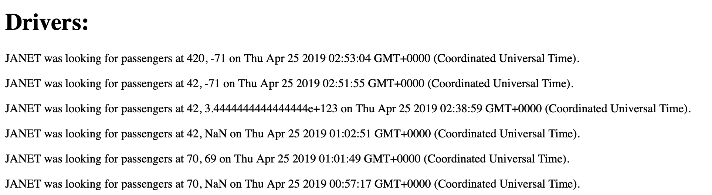

This webpage is meant to detail security and privacy flaws found in Sitara Rao's Assignment 3 and Assignment 4 submissions. In the report below, three main concerns in Sitara's product are decscribed. Pictures of the first two vulnerabilities are at the bottom.
I first reviewed my class notes and resources posted on the COMP 20 webpage. I then tried some of the flaws we discussed during class, as well as reviewed the index.js file. I mainly just experimented with the site, and took time to think about practical concerns (such as the latitude/longitude range), not just technical issues.
I found three main security and privacy issues. First, I determined a way to access the data of all passengers in the database. Then, I discovered that the latitude and longitude values were not being checked to see if they are valid. Lastly, I considered how much data can actually be stored in the database, and realized that there's a chance malicious users could take advantage of the limited storage.
Location: GET /passenger.json
Severity: High. This gives the use access to essentially all passengers, when in reality they should've only been able to query a single specified passenger.
Description: I tried the method we discussed in class by using /passengers.json?username[$ne]= to get all passengers not equal to the string entered.
Resolution: Validate the data being sent to the database and remove special characters. Another way would be to convert it to a string, so it would just look for [$ne] in the databse which likely will not exist.
Location: In the POST /rides functionality
Severity: Low. This is not so much of a privacy issue as it is a security/validation issue. Besides not showing up on the map, entering a latitude or longitude out of range will not create any major issues, but will cause vehicles or passengers not to show up in some cases (if, say, data was input incorrectly).
Description: Latitude and longitude should be in range -180 to 180, so this needs to be validated, or else the entry in the database will be essentially meaningless and incorrect--it is not likely the user would have intended to have a passenger or vehicle at a nonexistent latitude. This unrealistic and nonsensical data creates a security concern.
Resolution: Simply use an if statement (or similar) to ensure the lat/lng are in the right range.
Location: in the POST functionality, but also an issue to consider in general
Severity: High. The database has a storage limit for our free accounts (I believe 500 MB is the limit), so if too much data were to be entered, than issues would occur. It is likely that some data would be overwritten, or the data would not be able to be stored. This is a major issue, as data would be lost.
Description: One could either enter a lot of data or use the bash script as below to repeatedly insert into the database:
#!/bin/bash
while true
do
curl --data "username=JANET&lat=42&lng=-71" https://evening-basin-20132.herokuapp.com/rides
done
Resolution: The programmer should attempt to keep track of repeated entries by checking the time of the entry and/or the user. Also, it would be best to set up a way to manage/handle overflow, so that the result is not unexpected if the data exceeds the limit.
These security concerns mainly just require the implementer to use more time and care when adding features. These are fixable issues, and should be fixed immediately so that the site is made more secure and safer for the user.
One reference was used, in addition to Ming Chow's class notes. Curl was also used.
The following site was used for making in infinite loop with bash: https://www.cyberciti.biz/faq/bash-infinite-loop/
Introduction - Provide a description of the product and what you were hired to do Methodology - Describe your methodology pen testing the application, including the tools that you used Abstract of Findings - Provide an overview of all the security and privacy issues you identified. This section should be written for non-technical managers who do not have technical expertise and do not have time to read the entire document. Write this section using lay language. Issues Found - For each issue that you find, document: Issue (e.g., database injection, really bad programming practice) Location or page where issue was found Severity of issue (e.g., low, medium , or high). Justify your answer. Description of issue. How did you find it? A screenshot of problem is excellent. Proof of vulnerability. Show pictures or it didn't happen. Resolution. Make recommendation(s) on how issue can be resolved. Show code if possible. Conclusion - You can also list future considerations and recommendations with costs. References - A list of references and links that you used for your work. 